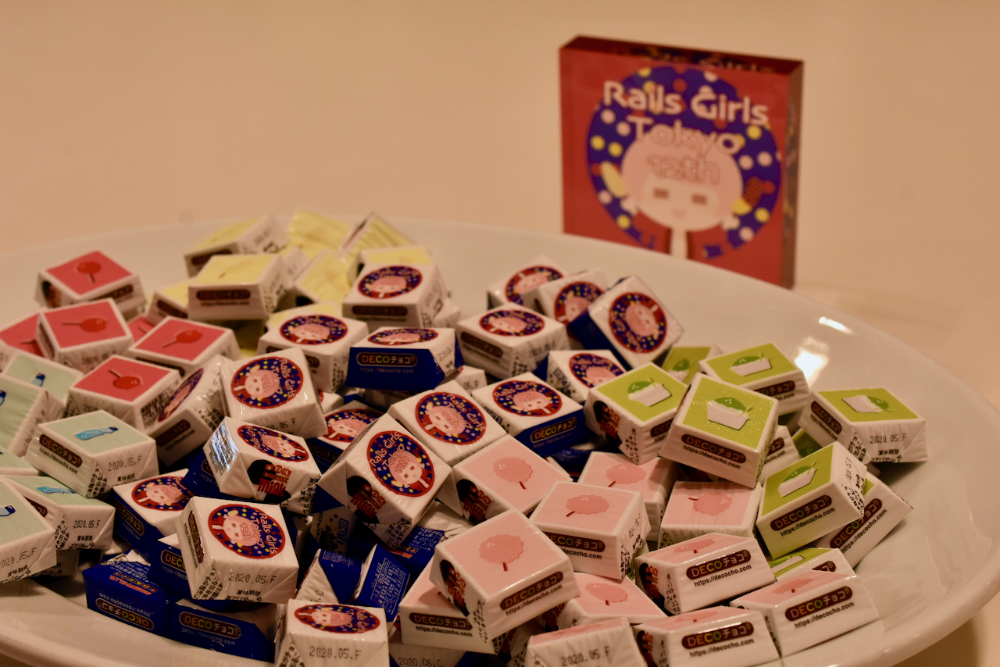
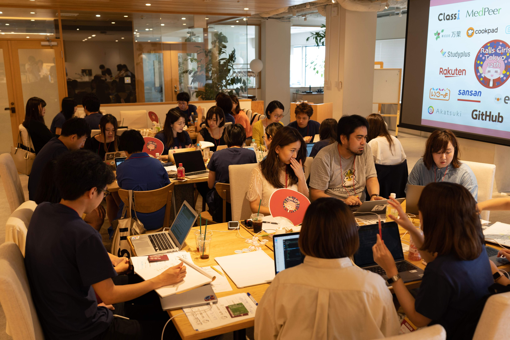
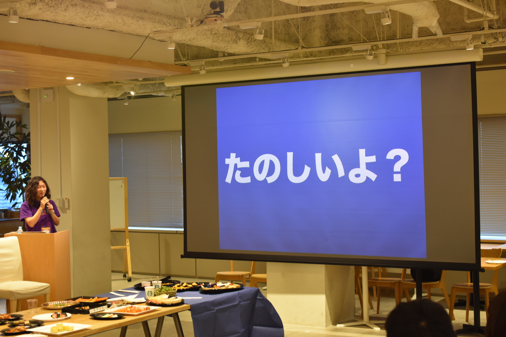

Rails Girls Tokyo 12th レポート
初稿：2019-08-10
はじめに
2019年8月2日(金)・3日（土）に クックパッド株式会社 様で Rails Girls Tokyo 12th が開催されました。
この記事の内容は、Rails Girlsに参加してみたい方にイベントの良さをお伝えできれば嬉しいという執筆者個人の視点からのレポートとなっておりますので、予めご了承いただければと思います。
Rails Girls ってなに？
Rails Girls は、より多くの女性がプログラミングに親しみ、アイデアを形にできる技術を身につける手助けをするコミュニティです。
2010年にフィンランドで開催された女性向けのプログラミングを学ぶイベントに始まり、その後、全世界で開催されようになり、今では230以上の都市で開催されています。日本でも東京だけでなく各地で開催されており、今年は既に、神戸、長野、愛媛、大阪、仙台でも開催されています。
筆者は今回初めての参加ですが、Rails Girls は、これまでのプログラミング歴は全く関係なく「プログラミング興味ある。やってみたい。」と思った女性が、プログラミングにちょっと触れてみる機会を楽しく提供しているところ、やりたいと思った人がどこでも開催できるようイベント開催やコミュニティ運営のための Rails Girls Guides がオープンソース化されているところが、本当に素敵なコミュニティだなぁと以前から気になっておりました。
どんなイベントだった？
ここからは Rails Girls Tokyo 12th の様子をレポートします。
インストールデイ
Rails Girlsでは、ワークショップの前日にインストールデイがあります。
この日は、ガールズの皆さんがお手持ちのコンピュータでプログラミングをするための環境構築をコーチがお手伝いします。
※ Rails Girlsのワークショップでは、ワークショップでプログラミングを体験する参加者を「ガールズ」、ガールズをサポートをする参加者を「コーチ」と表現しています。
開会
朝は開会までに余裕を持った時間に開場します。
開会時間までは、インストールディに来ることができなかったガールズの環境構築をコーチがお手伝いしたり、コーヒーを飲んでまったりしたりして過ごしていました。
そして、いよいよ開会です！
開会の挨拶をするらいむさん

開会の挨拶と1日の流れを説明したあとは、Friday Hugs!!

自己紹介
自己紹介シートが準備されていて、シートの各項目を隣の人にインタビューするスタイルで自己紹介をしていきました。
知らない人同士、初めての技術イベントで緊張しがちなガールズも話しやすいようにと工夫されているのが嬉しいですね。
とうもろこしチームの自己紹介の様子

ちなみにこの「とうもろこしチーム」というチーム名についてですが、今回の Rails Girls Tokyo は、お祭りをモチーフにしたデザインになっており、チーム名も、りんご飴、わたあめ、かきごおりなど、お祭りにちなんだチーム名とロゴが用意されていました。
Rails Girls Tokyo 12th のロゴとチームのロゴがプリントされたチロルチョコ 
ワークショップ
ガールズ25人は5チームに分かれていて、それぞれにアイディアを投稿するアプリケーションを Rails Girls アプリ・チュートリアル に沿って作っていきます。
初めてのアプリケーション作りはわからないことだらけだと思いますが、ガールズと同じくらいの人数のコーチがそれぞれのチームにいて、説明をしたりガールズの疑問に答えたりしながら1歩ずつ一緒に進めていけるので安心です。
ワークショップの様子 

スポンサーLT
Rails Girls は、多くのスポンサーの支援によって楽しいイベントをつくりあげています。
ランチ前後とアフターパーティでは、スポンサーそれぞれの企業、サービス、プロダクトの紹介、ご自身の経験、Rails Girls へのメッセージなど様々なライトニングトーク（以下LT）が展開されました。
ガールズの皆さんは、どんな企業なんだろう、どんな人なんだろう、どんなサービスなんだろうと興味津々の様子でした。
スポンサーLTの様子

ランチ
今回のランチは、7種類ものお弁当の中から好きなものを選ぶことができました。
楽しそうにお弁当を選んでいるガールズ

ワークショップ
腹ごしらえも済み、午後はアプリケーションを完成させてオンライン上に公開していきます。
公開が完了するとあちこちで拍手や歓声が湧きます。
りんごあめチームのみなさん、リリース完了！

ワークショップの終了時間まで余裕があれば、Rails Girls ガイドをもっと進めたり、気になることをコーチと一緒に解消したりします。
作ったアプリケーションのデザインを自分らしくアレンジしてみるガールズも多かったようです。
アフターパーティ
ワークショップ後は、同じ会場でアフターパーティがありました。
スポンサーの皆さま含め、会場にいる参加者でわいわい交流をしたり、お料理や飲み物を楽しんだりしました。
#rubyfriendsもたくさん投稿されてました！
美味しそうなフードがずらり

アフターパーティでは、コーチLTとスポンサーLTもありました。
終盤には、Ruby・Ruby on Railsの開発に深く携わっている松田さん（@a_matsuda）から、これからもっとプログラミングが楽しくなるような、ありがたいお話も聴くことができました。
松田さんの基調講演 
閉会
楽しかった Rails Girls Tokyo 12th もいよいよ閉会です。
主催者のらいむさんは、感極まって終盤ずっと涙目でした。それだけ強い気持ちでこのイベントを開催したんだなと感じると共に、そんならいむさんに参加者から声援が送られる暖かいコミュニティに参加できて良かった、なんてちょっと感動してしまいました。
気になったらぜひ参加してみませんか？
Rails Girls は東京に限らず各地で開催されています。
今回の Rails Girls Tokyo12th は単発のイベントですが、Rails Girls コミュニティでは、その後もガールズがプログラミングを続けていけるような企画もしているそうです。
まずは参加してみることできっと楽しい出会いがたくさんあると思います。プログラミングちょっと気になるという方や、そういった知り合いがいる方、ぜひ Rails Girls のイベント一覧から最寄りのイベントをぜひチェックしてみてください！
著者について
金山千夏（@chinatz）
Railsエンジニア。
よちよち.rb 出身。いい会社で働いている。お酒とはりねずみが好き。